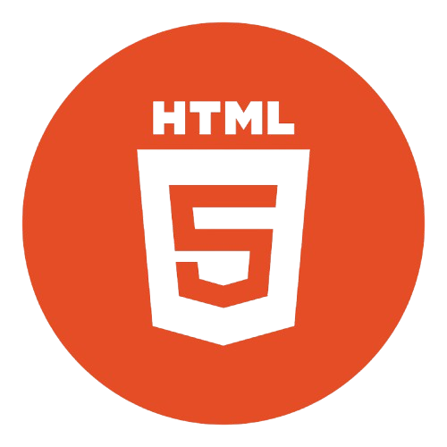
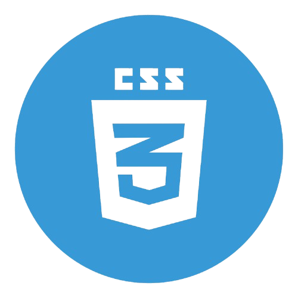
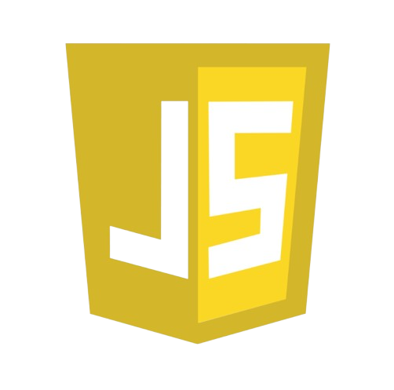

Daniel Barbosa Salvate
Olá, eu sou Daniel Barbosa Salvate.
Sou estudante de ADS e estou em constante aprendizado, desenvolvendo projetos para praticar e evoluir
minhas habilidades.
Este portfólio reúne minha jornada até aqui.
Busco um dia me tornar um Desenvolvedor Full-Stack.
Sobre mim
Me chamo Daniel.
Minha relação com tecnologia não começou como estudo — começou como curiosidade.
Quando ganhei meu primeiro celular ainda criança, não era só sobre jogar. Era sobre explorar, testar, mexer
em tudo sem saber exatamente o que estava fazendo.
Com o tempo, essa curiosidade deixou de ser só diversão e virou interesse em entender como as coisas
realmente funcionam.
Hoje, estou transformando essa curiosidade em aprendizado, construindo meus primeiros projetos e dando os
primeiros passos na área.
Hobbies e Interesses
Tenho grande interesse na área da tecnologia, sempre buscando aprender coisas novas e acompanhar as inovações
que surgem constantemente. Além disso, pratico jiu-jitsu, atividade que contribui tanto para minha saúde
física quanto para o desenvolvimento de disciplina e foco. Nos momentos de lazer, gosto bastante de assistir
filmes e séries, o que me permite relaxar e também explorar diferentes histórias e perspectivas.
Objetivos
Atualmente, estou em constante evolução na área de programação, buscando aprimorar meus conhecimentos tanto
em front-end quanto em back-end. Meu principal objetivo é desenvolver minhas habilidades de forma sólida e
consistente, acompanhando as demandas do mercado e as novas tecnologias. A longo prazo, almejo me tornar um
desenvolvedor full-stack, capaz de atuar em todas as etapas do desenvolvimento de sistemas e contribuir de
forma completa em projetos tecnológicos.
Linguagens que uso no meu dia a dia


Linguagens que ainda estou aprendendo
